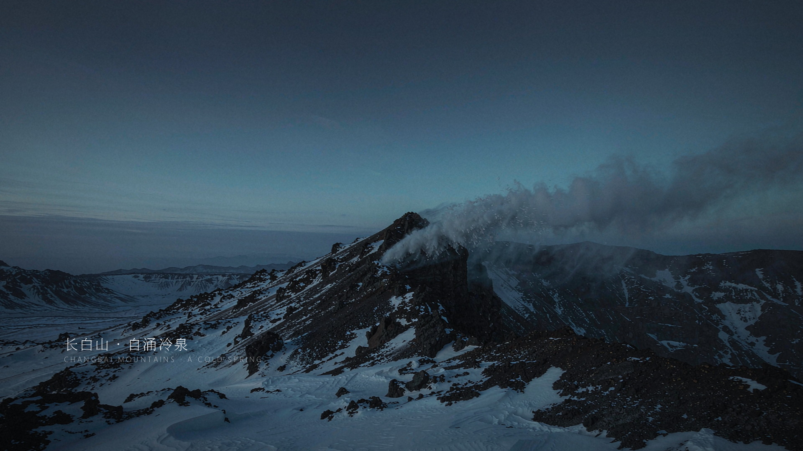
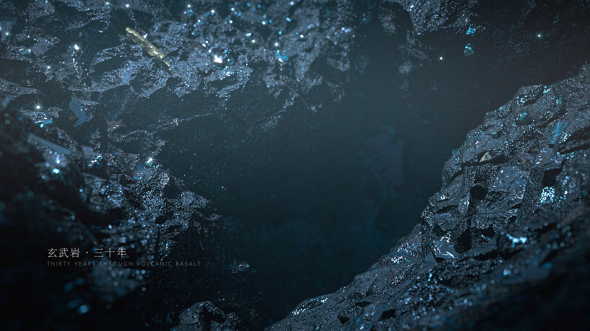
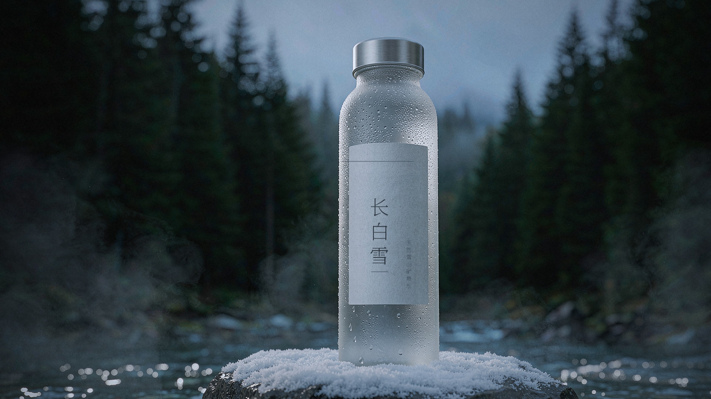
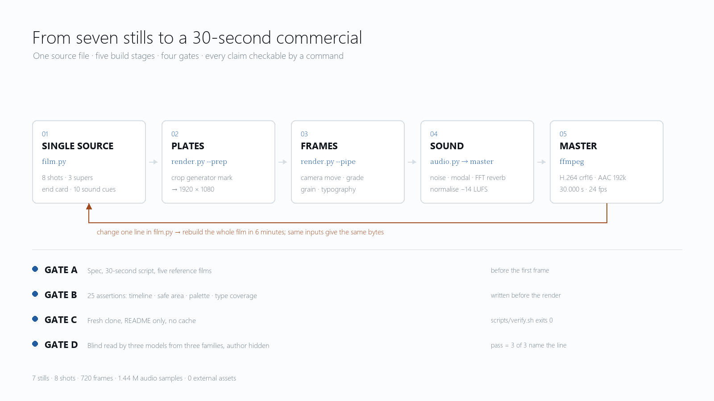

AARON Awards 2027 · 08 Best Speculative Ad
A 30-second speculative commercial for Nongfu Spring · Changbai Snow. One snowflake falls through thirty years of volcanic basalt and comes out as a bottle of water.
The idea
你喝到的，是三十年前的雪。
What you taste is snow from thirty years ago.
Changbai Snow comes from a cold spring inside the Changbai Mountains. The water fell as snow, seeped into volcanic basalt, and travelled through the rock for thirty to sixty years before it surfaced at a constant 7 °C. That number is on the brand's own product page.
It is also a number nobody has ever seen. For eight years the brand's films have stayed outside the mountain — snow, deer, forest, four seasons, mist. Beautiful, and always from the outside.
So this film goes in. Eight shots, one direction of travel, two camera moves: a very slow push, and a very slow pull. No people. No voice-over. No music.
The product's entire value is a duration. The category's entire visual language is landscape. Show the thirty years, not the mountain.
The brand's real line closes the film, unchanged:
我们不生产水，
我们只是大自然的搬运工。
We don't produce water. We are just the porters of nature.



The build
So the film is built like software: one source file, five build stages, four gates, and a command that fails the build when the film and its documents disagree.

Seven generated stills enter; a 30-second master comes out. Every stage has an assertion that can fail the build. Open full size ↗
film.py. The shot list is generated from it; the build fails if the document drifts.Credits
| Concept, art direction, edit | Zhang Yi（张一） |
| Keyframes | Zhang Yi, with a generative image model |
| Motion, grade, compositing, type | render.py — Python, OpenCV, Pillow |
| Sound design and mix | audio.py — NumPy synthesis, FFT convolution reverb |
| Build, tests, reproducibility | film.py, scripts/verify.sh |
| Tools | Generative image model · Python · FFmpeg · Source Han Serif SC |
Speculative work. Not commissioned by, affiliated with, or endorsed by Nongfu Spring.
No media spend, no broadcast. All imagery is AI-generated and composited by code; the end card states
「水源地影像为 AI 生成示意」. Product facts — thirty to sixty years of basalt filtration, a 7 °C spring,
the closing brand line — are quoted from Nongfu Spring's own product pages and are listed with sources in
docs/03-SOURCES.md.